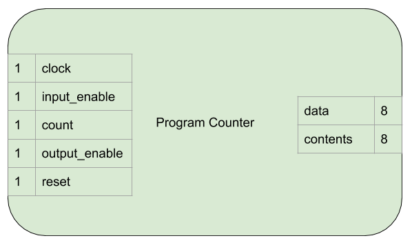
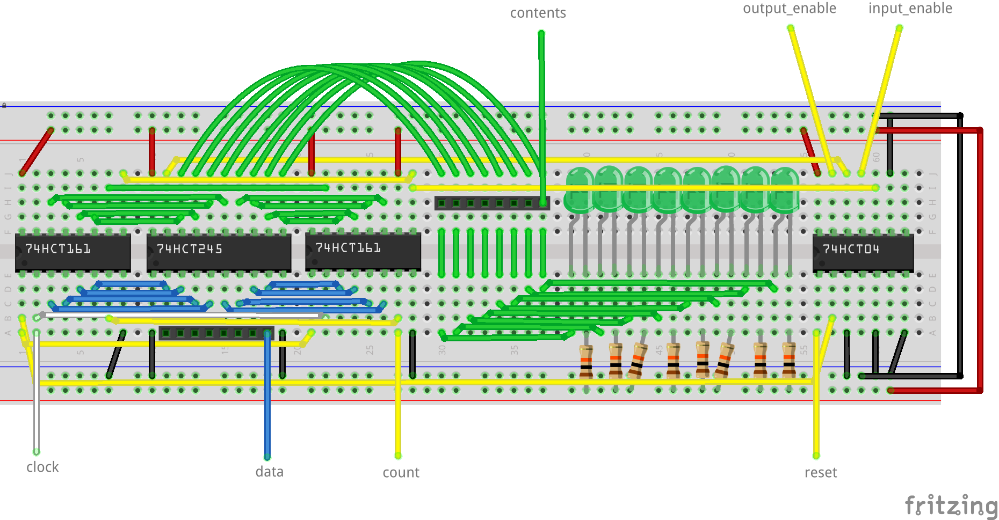

Program Counter¶
The program counter stores an eight bit number used to track the current position/instruction in program memory.
It’s similar to a regular register but has some extra functionality:
- It can add one to it’s current value.
- It’s value can be asynchronously reset to 0.
Interface and Operation¶
This is the interface to the program counter:
This is how it operates:
| Name | Bit width | Description |
|---|---|---|
| data | 8 | Reads bits from, or asserts bits onto this connection. |
| contents | 8 | Always outputs the current value held in the program counter. |
| clock | 1 | Clock signal from the clock module. |
| input_enable | 1 | While high, the program counter stores the value on data on a rising clock edge. |
| count | 1 | While high, the program counter increments the stored value by one on a rising clock edge. |
| output_enable | 1 | While high, the program counter asserts it’s content onto data. |
Implementation¶
- Two 74HCT161s are used to store, increment and clear the 8 bit value.
- A 74HCT245 is used to provide a tri-state output to allow asserting values onto the bus, or not.
- A 74HCT04 is used to invert the incoming input_enable, output_enable and count signals to drive the active low inputs on the 74HCT161s and 74HCT245.
- LEDs with current limiting resistors are used to display the current contents.
The electronics are laid out on the breadboard like so:
{kind=link}